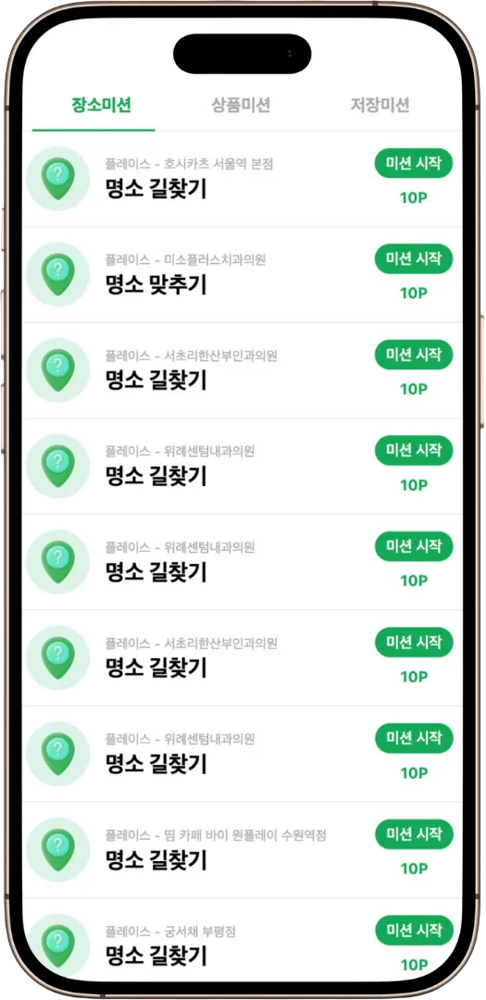
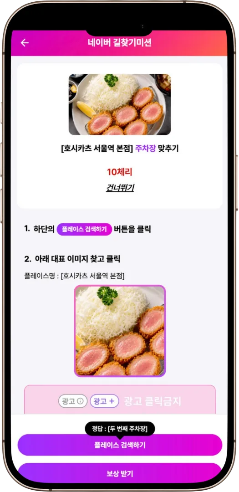
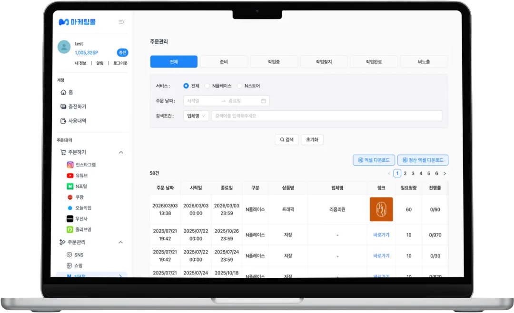

여러 회사 앱에 WebView 로 실려 나가는 광고 지면 · 호스트 앱과는 네이티브 브릿지로 통신


목록과 상세. 같은 코드가 매체마다 다른 미션 구성으로 뜹니다 — 그 차이를 코드가
아니라 설정이 만듭니다.
문제
광고사마다 요구하는 미션 로직이 달랐습니다. 새 요청이 올 때마다 지면 코드에 분기를
더해 배포했고, 매체가 늘수록 분기도 같이 늘었습니다. 한 매체를 위한 수정이 다른
매체까지 위험하게 만드는 구조였습니다.
내 역할
지면 프론트엔드 전부와 설정 스키마 설계, 전환 퍼널 집계를 맡았습니다.
선택
매체별 코드 분기 대신 설정 기반으로 갈랐습니다. 분기를 유지하면 매체 수만큼
경우의 수가 곱해지고 매번 배포가 필요합니다. 바뀌는 것(미션 로직)과 고정된 것(화면
동작)을 나눠, 이후 미션 유형은 배포 없이 어드민에서 추가·변경합니다.
서버 상태 도구를 화면 수명에 맞춰 골랐습니다. 오퍼월은 WebView 로 열렸다
닫히는 단발성 세션이라 캐시를 길게 들고 있을 이유가 없어 SWR 을 썼고, 운영자가 종일
띄워 두는 어드민·마케팅몰에는 무효화 제어가 세밀한 TanStack Query 를 썼습니다.
구현
어디서 이탈하는지 알 수 없어 상세보기 → 복사 → 시작 → 제출 → 완료 이벤트로
매체·카테고리별 퍼널을 집계했습니다. 아래 확인의 전환율 급감도 이 지표에서 찾았습니다.
이미 한 번 터졌던 검색어 인코딩, 지도 앱 미설치, 인덱스 범위 문제를 재현 테스트로
고정했습니다 — Vitest + RTL 49개.
확인
설정으로 옮긴 뒤 무엇이 달라졌는지는 코드가 아니라 퍼널로 봤습니다. 그리고 그
퍼널을 붙이기 전에는 전환율이 떨어져도 떨어진 줄 몰랐습니다.
전체 전환율이 45%에서 15%까지 떨어진 구간이 있었는데, 매체별로 나누니
한 매체만 68%에서 7%였고 나머지는 그대로였습니다. 같은 기간 그 매체의
상세보기는 12배 늘었는데 완료는 그대로여서, 유입이 는 게 아니라
참여가 막혀 같은 목록을 반복 조회하는 상태로 봤습니다. 원인은 소진 여부를
판단하는 캐시를 자사 미션 조회 판정보다 먼저 확인하는 순서였습니다 —
노출돼야 할 미션이 차단되면서 재조회가 반복됐습니다. 판정 순서를 바꾸고 전체 조회가
비었을 때만 소진으로 기록하게 고쳐 66%로 회복, 3주간 유지됐습니다.
콜백 실패도 전환 실패로 세고 있었는데, 매체사 응답 코드로 나눠 보니
78.5%가 중복 참여였고 추적 ID 관련은 0건이었습니다. 실패로 세던 대부분이
정상 동작이었습니다 — 사유별 카운터로 갈라 적재해 진짜 장애와 섞이지 않게 했습니다.
지금이라면
퍼널 지표는 전환율이 깨진 뒤에 붙였습니다. 지금 새 지면을 붙인다면 지표를 먼저
붙이고 시작합니다. 매체사 연동의 preflight 건에서도 같은 걸 다시 배웠습니다 — 고치고 나서야
"before" 가 없다는 걸 알았습니다.
03매체사 연동Node.js · Redis
매체사 API — 내 마음대로 못 고치는 계약을 2년 넘게 유지하기
Node.js · Express · PostgreSQL · Redis · AWS
평균 1,000 RPS · 피크 1,900 RPS ·
일 9,000만 건 · 7주 누적 44억 건
문제
버즈빌은 매체사가 우리 API 를 호출해 캠페인을 가져가고, 퍼플페퍼는
우리가 상대 API 를 호출해 캠페인을 보냅니다. 방향이 반대라 실패의 모양도
반대였습니다. 그리고 어느 쪽이든 응답 필드 하나를 바꾸려면 상대 회사 개발자와
먼저 합의해야 했습니다 — 내 저장소만 고쳐서 끝나는 코드가 아니었습니다.
방향이 반대라 실패의 모양도 반대다 — 들어오는 쪽은 부하가, 나가는 쪽은
중복 등록과 누락이 문제가 된다.
내 역할
양쪽 방향의 API 스펙을 직접 정의하고, 연동 서버와 운영을 맡았습니다.
외부 개발자가 물고 있는 계약이라 하위호환을 기준으로 삼았습니다.
선택
내보내는 쪽은 전량 재전송 대신 해시 비교로 갈랐습니다. 전량을 다시 보내면
상대 API 에 부하가 가고 중복 등록 위험이 생깁니다. 우리 상태와 상대의 전송 상태를
주기적으로 해시로 비교해 달라진 것만 보내, 중복과 누락을 동시에 막았습니다.
캐시 TTL 을 늘리는 대신 중복 요청 자체를 없앴습니다. TTL 을 늘리면 캠페인
소진 반영이 늦어져 이미 끝난 미션이 노출됩니다. 같은 요청이 동시에 오면 DB 호출은
하나만 실행하고 결과를 나눠 주는 방식으로 바꿨습니다 — 신선도를 포기하지 않고
부하만 줄이는 쪽입니다.
새 매체는 지우기 쉬운 형태로 붙였습니다. 한 매체로 먼저 파일럿하고, 문제가
생기면 연동 코드를 걷어내는 게 아니라 대상 목록에서 빼는 것으로 롤백됩니다.
구현
중복 요청 제거 · 동시 실행 제한 · 짧은 캐시로 평균 응답
160ms → 9ms.
잔여 수량 계산 방식을 바꿔 동시 참여 경합을 줄였습니다.
콜백 실패를 사유별 카운터로 나눠 적재해, 정상 중복과 진짜 장애가 한 숫자에 섞이지
않게 했습니다.
확인
고트래픽 파트너의 미션 재오픈 조건을 바꾼 배포 뒤 전체 API 응답이 12ms 에서
160ms 로 늘고 일부는 60초까지 밀렸습니다. 요청량은 평소와 같았고
DB CPU 만 보면 정상이었습니다(30% 수준) — 실제로 차 있던 건 connection pool
이었습니다. 중복 요청 제어가 없어 한 파트너의 반복 요청이 connection 을 계속 물고
있었습니다.
전체 API 응답
160ms → 9ms
최대 지연
60초 → 해소
장애 전 12ms 보다도 빨라졌습니다 — 중복 요청을 없애면서 원래 매번 하던 DB
조회까지 줄었기 때문입니다. 그래서 배포 검증 기준에 DB CPU 만이 아니라 응답 시간과
connection 사용량을 같이 넣었습니다.
그 뒤에 잰 것
실사용자 성능을 매체별로 보려고 계측을 직접 붙였습니다. 지면에서 Core Web Vitals 를
표본 추출해 보내고 서버가 매체별 p75 로 집계하는데, 수집이
지면을 느리게 만들면 재려던 값이 나빠지므로 수집 코드는 지연 로드했습니다.
그 김에 하루치 ALB 액세스 로그 227만 요청을 열어 보니
제휴사 요청의 31%(하루 40,668건)가 preflight 였습니다. 액세스 로그에는 요청
헤더가 없어 원인을 알 수 없었고, 헤더 이름만 세는 계측을 잠깐 붙여 확정했습니다 —
모든 요청에 붙던 Content-Type 하나였습니다. GET 은 본문이 없어
의미가 없는데, 붙는 순간 단순요청 조건이 깨져 왕복이 하나씩 더 생깁니다. GET 에서
걷어내고 POST 는 Access-Control-Max-Age 로 캐시해
94% 감소(40,668 → 2,265건), GET preflight 는 0건.
고치고 나서야 실사용자 기준 "before" 가 없다는 걸 알았습니다. 그래서 API 응답 시간도
같은 파이프라인으로 재기 시작했습니다.
결과
피크 1,900 RPS 구간을 2년 넘게 운영 중이고, 그사이 스펙을 깨서
상대 매체 연동을 멈추게 한 적은 없습니다.
지금이라면
응답 스펙에 버전을 두지 않아, 필드를 더할 수는 있어도 뺄 수는 없었습니다. 2년 넘게
유지될 계약이라는 걸 알았다면 경로에 버전을 먼저 넣고 시작했을 것입니다.
광고주가 대행사를 거치지 않고 상품 선택부터 결제·충전·정산까지 직접 처리합니다.
돈이 오가는 화면이라 실패했을 때 무엇이 남는지를 기준으로 만들었습니다 — 결제창은
통과했는데 서버 승인이 실패하는 경우가 있어 승인 응답까지 끝나야 포인트가 반영되도록
바꿨고, 만료된 구독을 즉시 차단하는 대신 active / grace / expired / suspended /
none 다섯 상태로 나눠 유예 기간과 복구 일자를 안내합니다. 세금계산서·현금영수증
수수료로 충전액과 결제액이 달라지는 문제는 증빙을 고르는 시점에 최종 금액을 다시
계산해 보여 줍니다. 같은 금액 계산이 한 파일에 네 곳 흩어져 있어 한 함수로 모으고
테스트 39개로 고정했습니다.
광고 운영 어드민
React · TypeScript · Next.js · Ant Design

캠페인 관리 화면. 한 행에 정보가 많아도 상태를 색과 배지로 스캔할 수 있게 했습니다.
캠페인·참여자·정산·미션 검수를 다루는 사내 도구로, 2년 5개월간 78개 화면을
만들었습니다. 하루 종일 같은 화면을 보는 운영자가 사용자라 밀도를 높이는 대신 상태를
눈으로 훑을 수 있게 구성했습니다. 마케팅몰과 같은 API 를 쓰지만, 처음 오는 광고주와
매일 쓰는 운영자는 필요한 정보가 달라 같은 데이터를 다른 밀도로 설계했습니다. 정산
데이터를 내보낼 때는 화면에 적용한 필터가 그대로 반영되도록 했습니다.
Aurora 가 private VPC 안에 있어 GitHub 러너에서 마이그레이션을 돌릴 수 없었습니다.
러너를 VPC 안으로 넣는 대신 마이그레이션을 서버 쪽 배포 훅으로 옮겼습니다 — 접근
경로를 늘리지 않는 쪽입니다. 배포는 PM2 클러스터 2인스턴스를
reload 해 처리 중인 요청을 끊지 않고 교체합니다.
그렉터 · Frontend Developer · 2022.07 – 2023.07
스마트시티 IoT 관제 플랫폼
React · TypeScript · Zustand · React Query
스마트 횡단보도·스마트폴·스마트쉘터의 실시간 관제 화면을 개발했습니다. 장비마다 봐야 하는
지표가 달라 이상 상태가 먼저 보이도록 정보 구조를 짰고, 센서 스트림이 끊기거나
지연될 때 기존 값이 빈 칸으로 깜빡이지 않게 상태를 관리했습니다. 클래스형 컴포넌트를
함수형으로 전환하고 TypeScript 를 도입했으며, 여러 개발자가 같은 UI 를 각자 만들고 있어
인터페이스를 먼저 합의한 뒤 공용 컴포넌트 라이브러리를 만들었습니다 — 중복 코드
40% 감소. 종일 띄워 두는 화면이라 초기 로딩이 곧 체감 품질이어서
이미지 최적화와 코드 스플리팅으로 Lighthouse 30 → 90.
05문제 해결
훅 하나 때문에 27개 페이지가 빈 HTML로 렌더링되고 있었습니다
검색 노출 문제를 확인하던 중 브라우저에서는 정상적으로 렌더링되지만 서버에서 내려오는
HTML에는 본문이 거의 없는 문제가 발생했습니다.
동일한 문제가 27개 페이지에서 발생하고 있어 개별 페이지가 아니라 공통 코드부터 확인했고,
_app.tsx의 useSyncExternalStore 사용 방식이 원인임을
확인했습니다.
로컬 상태 복원 전 화면 깜빡임을 방지하기 위해 작성한 코드가 SSR에서도 실행되면서 서버에서
본문을 렌더링하지 못하고 있었습니다.
상태 복원과 화면 렌더링을 분리해 서버에서는 본문을 먼저 렌더링하고 클라이언트에서 상태를
복원하도록 구조를 변경했습니다. 27개를 각각 고치는 대신 공통 레이어 한 곳에서 끝냈습니다.
서버 HTML 본문
0자 → 8,391자
모바일 TBT
19.4초 → 40ms
Desktop 성능
57 → 96
FAQ LCP
13.5초 → 2초
AWS 청구서에서 설정값 오타를 찾았습니다
리전 간 데이터 전송 비용이 월 $554까지 늘어난 것을 확인했습니다. 이전 6개월에는
없던 비용이라 일별 발생 시점과 Load Balancer 전송량부터 봤습니다. 월 전송량이 약
6.8TB였습니다.
처음에는 curl -I 결과의 Vary: Accept-Encoding 헤더를 보고 압축이
걸려 있다고 판단했습니다. 그런데 HEAD 요청에는 응답 본문이 없어 압축 여부를 확인할 수
없다는 걸 깨닫고 GET 으로 다시 확인했습니다. 대부분의 응답에
Content-Encoding 이 없었습니다.
원인은 압축 최소 크기가 1024 가 아니라 100 * 1000 으로
설정돼 있던 것이었습니다. 100KB 미만은 전부 압축되지 않고 나가고 있었습니다.
대표 응답 크기
11,147B → 1,617B
감소율
약 90%
같은 착각을 반복하지 않도록, 배포 과정에 실제 GET 응답에 압축이 걸렸는지 확인하는
스모크 테스트를 넣었습니다. 헤더 하나로 판단하지 않고 본문으로 확인합니다.
고치지 않기로 한 것도 있습니다
Lighthouse 가 크롤러를 따라갈 수 없는 링크를 지적해 점수가 깎이고 있었습니다. 링크를
고치면 점수는 바로 오릅니다.
그런데 그 목록의 두 번째 페이지는 첫 번째 페이지와 완전히 같은 HTML 이었습니다.
링크를 크롤 가능하게 만들면 검색 엔진 입장에서는 같은 내용의 URL 이 하나 더 생깁니다.
점수를 위해 고치는 순간, 원래 하려던 일(검색 노출)은 오히려 나빠지는 구조였습니다.
점수 대신 검색 품질을 기준으로 판단해 그대로 뒀습니다. 도구가 지적한 것을 다 고치는
것이 목적이 아니라, 지표가 대신 말하려는 것이 무엇인지 확인하는 게 먼저였습니다.
06일하는 방식
AI 를 어디까지 쓰나
Claude Code · git worktree 병렬 · 구현/리뷰 에이전트 분리
맡기는 것
구현입니다. 작업마다 독립된 git worktree 에 에이전트를 띄워 병렬로 돌리고,
작업이 서로의 파일을 건드리지 않게 분리합니다.
안 맡기는 것
무엇을 만들지와 그 결과를 받아들일지는 제가 정합니다. 특히 매체사와 주고받는
API 스펙처럼 상대 회사 개발자와 합의해야 하는 결정은 코드 문제가 아니라
합의 문제라 넘기지 않습니다. 지표를 어떻게 읽을지도 마찬가지입니다 — 오퍼월의 콜백
실패 78.5%처럼, 숫자가 맞아도 해석이 틀리면 엉뚱한 곳을 고치게 됩니다.
통과 기준
구현 에이전트와 리뷰 에이전트를 분리하고, lint · test · typecheck · build 를
통과해야만 커밋되도록 훅으로 묶었습니다. 급할 때 빠져나가지 못하게
--no-verify 도 훅에서 막습니다.
판단 기준
AI 가 낸 결과를 받아들일지는 운영에서 실제로 겪은 문제로 판단합니다. 이
문서의 사례들이 그 기준입니다 — 한 번 터진 방식은 다시 통과시키지 않습니다.